Personajes
Oki
Es el protagonista del juego. Acompáñalo a recorrer distintos escenarios mientras reúne estrellas y esquiva peligros.

Modo de juego
- 🎮 Individual: experiencia para un solo jugador.
Oki es un videojuego 2D desarrollado en Phaser.
La historia sigue a Oki, un pequeño marciano verde que ha quedado varado en un planeta desconocido, perdido en el vasto cosmos.
Rodeado de peligros y criaturas hostiles, Oki deberá recolectar la mayor cantidad de estrellas posible. Gracias a su composición química, estas estrellas le permiten acumular la energía necesaria para crear un portal y regresar a su hogar.
Es el protagonista del juego. Acompáñalo a recorrer distintos escenarios mientras reúne estrellas y esquiva peligros.
Objetos astronómicos de gran poder. Su energía permite a Oki generar el portal para volver a su dimensión y le otorga un escudo temporal que lo protege del daño.
Permiten acceder a zonas elevadas y explorar distintas áreas del escenario.

Criaturas que se encuentran en distintos planetas del hiperespacio. Infligen daño a Oki al entrar en contacto con él.